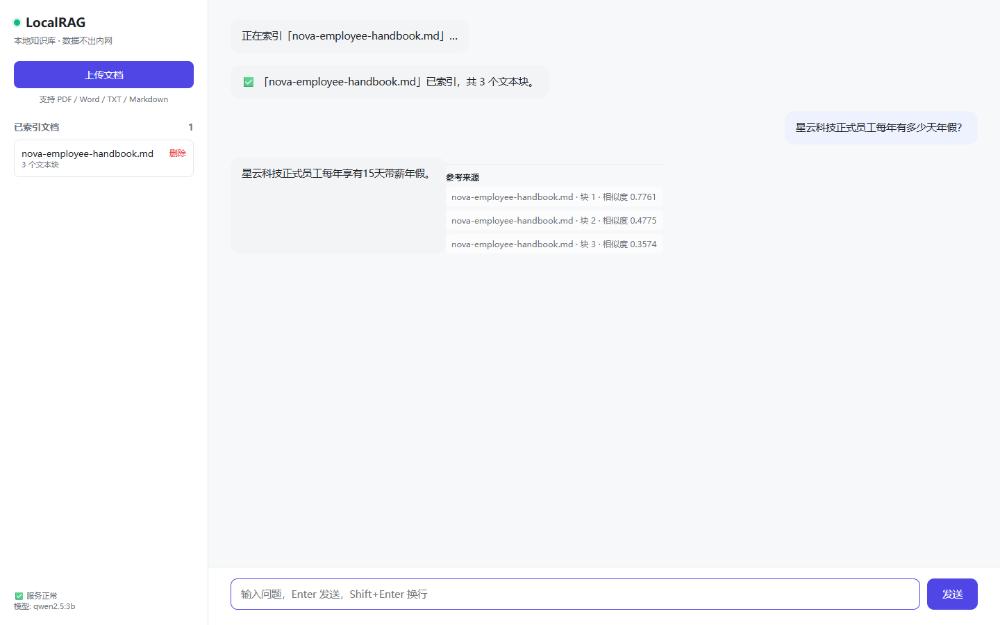
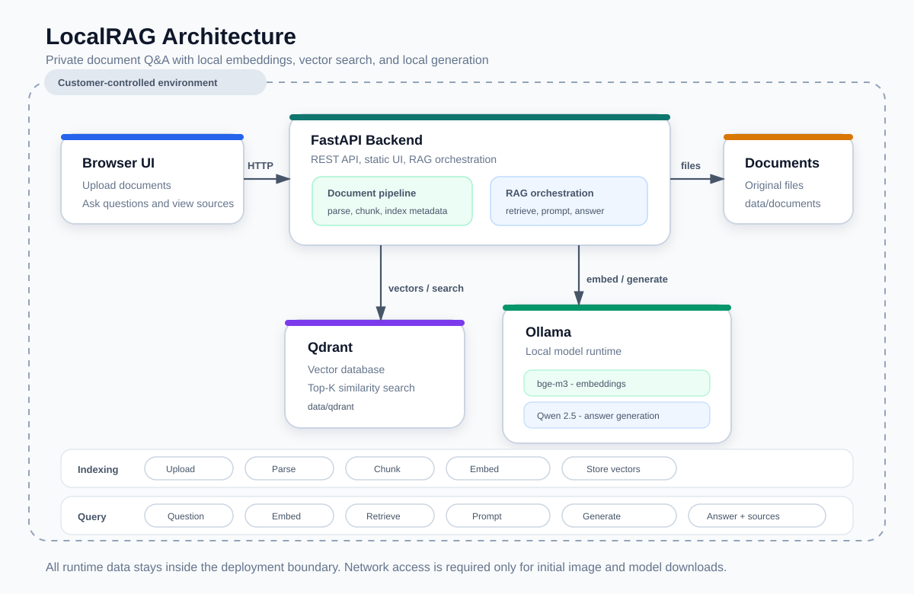

Private RAG · Windows Native Beta v0.3.0
把内部文档，
变成可追溯的本地 AI
LocalRAG 在你的 Windows 电脑里完成文档解析、向量检索和本地生成。Windows 内测版不需要 Docker、WSL 或 Python，解压后双击启动器即可使用。
Windows 内测版暂未代码签名，系统可能提示“应用未验证”；压缩包内包含处理说明。
本地运行 不上传文档
来源引用 可追溯
Windows 原生 无 Docker
MIT 开源

已验证的技术栈
Qdrant Nativellama.cppFastAPIbge-small-zhQwen2.5Windows x64
Why local
不是所有资料，都能交给云端 AI。
案件材料、患者信息、财务底稿、工艺配方——这些内容的核心问题不是“方不方便”，而是“能不能出内网”。
数据边界文档、切片、向量和模型都运行在自己的电脑或内网环境里。
答案可追溯回答基于检索片段，并展示命中的文档与相似度。
不被平台锁定模型、知识库和部署方式都可以替换和维护。
Capabilities
一套能落地的私有知识库闭环
不追求把所有 AI 能力堆在一起，先把“文档能被找到、回答能被验证”做扎实。
01
文档解析
支持文本型 PDF、DOCX、TXT 和 Markdown，自动解析和切块。
02
本地向量化
使用 bge-small-zh 在 Windows 本机生成中文向量。
03
检索问答
问题先检索相关片段，再由本地模型基于上下文生成答案。
04
来源引用
前端展示命中的文档、文本块和相似度，方便人工核验。
05
本地生成
Qwen 系列模型在部署环境内运行，不依赖云端 AI API。
06
Windows 原生启动
Qdrant、llama.cpp 和 FastAPI 由桌面启动器统一启动和检查。
Architecture
本地组件各司其职
数据在本地闭环中流动，外部 API 不参与运行时的文档处理和答案生成。

三个本地服务，一条完整链路
- FastAPI：解析、切块、RAG 编排和本地 Web API
- Qdrant：持久化向量并提供相似度检索
- llama.cpp：本地中文 embedding 与答案生成
Windows 启动器会检查环境、启动本地服务并打开浏览器；运行时不调用公有云 AI API。
查看架构说明 ↗Demo · 42 seconds
从上传文档到回答，真实跑一遍。
这段录屏来自真实本地知识库流程，不是概念演示。你会看到文档索引、基于资料的问答，以及来源引用。
1上传虚构员工手册
2自动解析并索引为 3 个文本块
3提问年假、远程办公和信息安全问题
4回答显示命中的来源与相似度
Use cases
适合哪些使用场景
适合资料多、查找耗时、希望数据继续留在自己电脑或内网里的个人和小团队。
律所 / 法务
案件材料、合同、法规和历史意见检索。
财税 / 审计
政策、底稿、审计报告和内部问答。
制造 / 工业
设备手册、工艺文件、故障排查和售后知识。
内网 / 涉密
数据不能出内网，需要本地模型和可维护部署。
当前版本适合
- 文本型 PDF、DOCX、TXT、Markdown
- 小团队内部知识检索和问答
- Windows 10/11 x64 本机或内网环境
- 对数据边界和来源可追溯性有要求的场景
当前版本不包含
- 扫描件 OCR
- 多租户、企业 SSO 和复杂权限
- Reranker 重排
- 7×24 生产级 SLA
Private by design
把本机文档，变成可追溯的答案。
下载 Windows 内测版，解压后双击启动器。遇到安装或使用问题，可以通过 GitHub Issue 或邮件反馈。